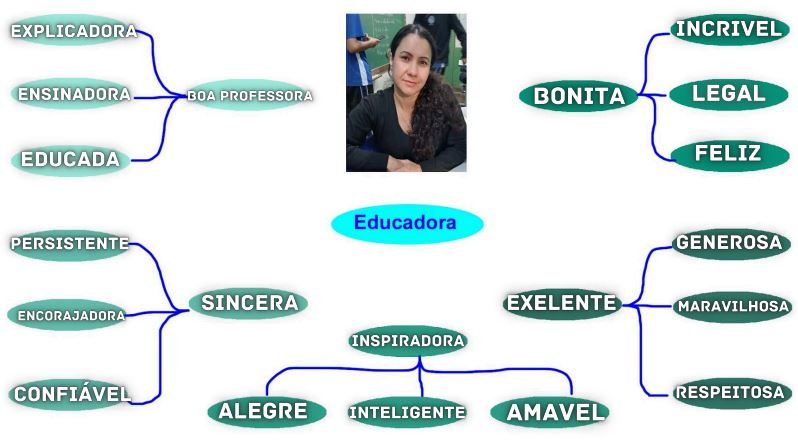

Professora Josiane,sua sabedoria e carinho iliminam nosso caminho de maneira que palavras não podem expressar.
Você nos ensina que o verdadeiro aprendizado vai além das salas de aulas, cultivando em nós a curiosidade, a coragem de questionar e a paixão pelo conhecimento.

"Querida Josiane,
Escrevo para agradecer pelas excelentes aulas de educação financeira. A forma como você explica os conceitos e a sua dedicação em
nos ensinar têm sido inspiradoras. Tenho aprendido muito e vejo como esses conhecimentos serão úteis
para o meu futuro."
Murilo De Lima Macedo, 3º TDS
Querida Professora, Josiane
Gostaria de ser uma pessoa tão legal. Seu compromisso com nosso aprendizado é inspirador e transformador.
Seus ensinamentos são muito importantes e valiosos para a vida toda. A sua paciência e compreensão fazem
toda a diferença no nosso dia a dia escolar. Agradeço por acreditar em nosso potencial e nos motivar a dar
o nosso melhor. E somos gratos por cada momento de aprendizado proporcionado. Suas orientações e conselhos
são verdadeiros tesouros que levaremos conosco para sempre. Com imenso carinho e respeito, agradeço por ser
uma professora extraordinária e por todo o impacto positivo que tem em nossas vidas.
Gustavo Henrique Souza Silva, 1º TDS
"
Obrigada por me ensinar coisas que eu achei que nunca conseguiria compreender. A sua profissão
é inspiradora e é um grande privilégio poder aprender com você!
"
Cibelly, 2°TDS
"
profª:Josiane,sua dedicação e paixão pelo ensino são verdadeiramente admiráveis. Obrigado por guiar-nos na jornada do conhecimento.
"
David Emanuel ribeiro, 2ºDTS
Olá, professora Josiane. Sua paixão pela educação e seu carinho com cada aluno transformam nosso
aprendizado e enriquecem nossas vidas. Sua dedicação é inspiradora e torna nossa jornada escolar
memorável. Agradecemos profundamente por tudo isso.
Beatriz Vieira Boeno, 4º Info


 Clique na imagem acima para dar sua opinião sobre nosso projeto!
Clique na imagem acima para dar sua opinião sobre nosso projeto!